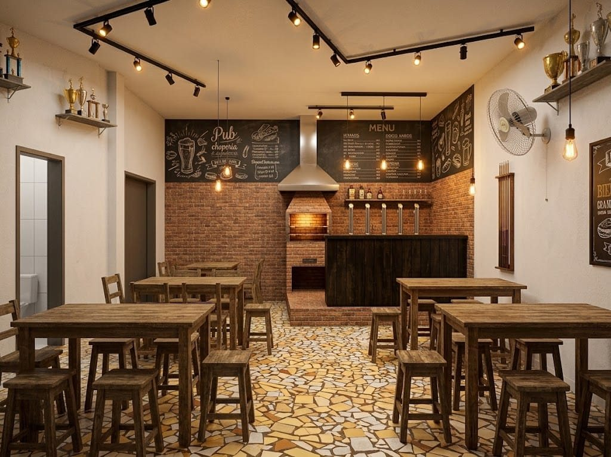
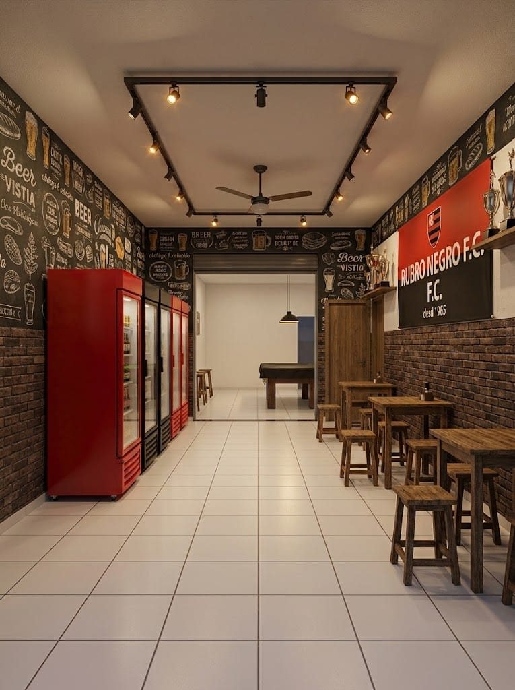
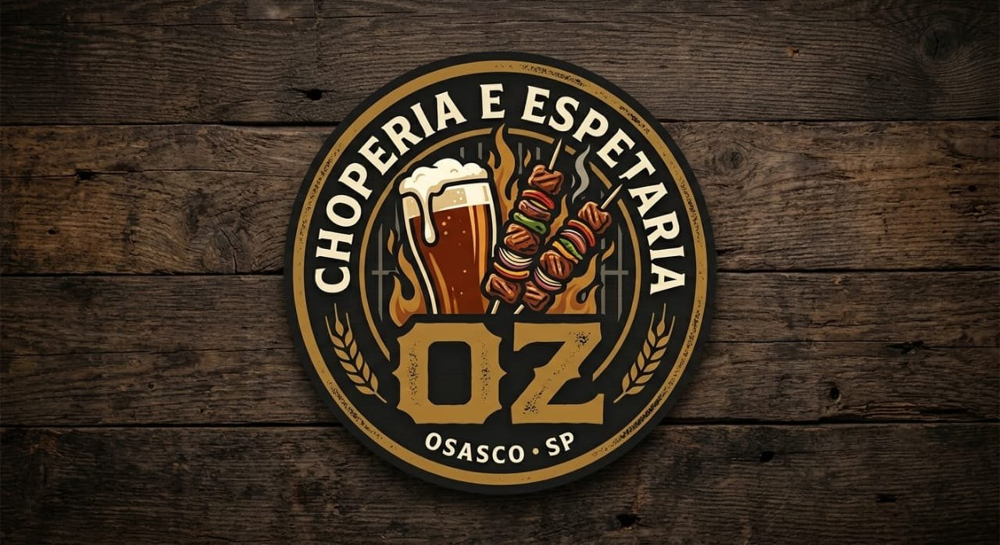

Chope na pressão
Heineken
Puro malte, tirado na hora e bem gelado.
Osasco · SP
Chope Heineken e Petra na pressão, espetinhos assados na hora na churrasqueira e porções para dividir. Venha para a Oz ou peça seus espetos em casa.
Atualizado pela casa
Veja quais espetos estão assando neste momento para comer aqui na Oz. A lista é atualizada pela equipe da churrasqueira.
Para acompanhar
Chope na pressão
Puro malte, tirado na hora e bem gelado.
Chope na pressão
Leve e refrescante, para acompanhar o espeto.
Cerveja de garrafa
Trincando, direto do freezer.
Cerveja de garrafa
Clássica e gelada, para dividir na mesa.
Drinks na taça
Drinks da casa servidos na taça. Peça a carta no balcão.
Drinks na taça
Opções sem álcool, também na taça, para quem vai dirigir.
Venda de bebidas alcoólicas proibida para menores de 18 anos. Se beber, não dirija.
Dois ambientes

Ambiente 1
De frente para a churrasqueira e para a chopeira. Mesas de madeira, parede de tijolos e o cardápio no quadro-negro: aqui você vê o espeto saindo da brasa.

Ambiente 2
Geladeiras cheias, decoração de boteco e mesa de sinuca ao fundo. O lugar para juntar a turma, ver o jogo e pedir a próxima rodada.
Delivery
Monte seu pedido e envie direto para o nosso WhatsApp. Confirmamos o valor, a taxa de entrega e o tempo de preparo na conversa.
